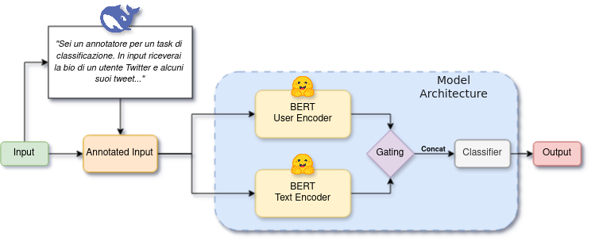

Abstract
This project addresses MULTIPRIDE, a binary classification task focused on detecting whether LGBTQ+ related terms are used with reclamatory intent. The system targets cases where potential slurs or derogatory terms are used non-discriminatorily, for example as self-identification or as an expression of community belonging.
Our contribution focuses on Task B, where user bios are available alongside tweet text. We propose a dual encoder architecture that combines a custom user encoder and text encoder through gated feature fusion, producing a representation for final reclamation classification.
Method
The architecture combines contextual signals from user bios with the tweet text that contains the potentially reclaimed term. Both encoders produce hidden representations that are weighted through a gating mechanism before final binary classification.
User Encoder
Encodes profile information from user bios to capture contextual signals that may help distinguish reclamatory usage from discriminatory usage.
Text Encoder
Models tweet content using task labels from the official MULTIPRIDE data, focusing on the language surrounding potentially reclaimed terms.
Gated Fusion
Combines user and text hidden states through a gating mechanism before the final binary classification layer.

Task Setting
MULTIPRIDE includes a text-only Task A and a contextual Task B where user bios are available in addition to tweet text. This work focuses on Task B for Italian and Spanish, using bio context to enrich the representation available to the classifier.
Because the official dataset is not publicly released by the organizers, the repository includes a mock dataset so the code can run and the pipeline can be inspected.
Ethical Note
BibTeX
@misc{tedeschini2026aiwizardsmultipridehierarchicalapproach,
title = {AIWizards at MULTIPRIDE: A Hierarchical Approach to Slur Reclamation Detection},
author = {Luca Tedeschini and Matteo Fasulo},
year = {2026},
eprint = {2602.12818},
archivePrefix= {arXiv},
primaryClass = {cs.CL},
url = {https://arxiv.org/abs/2602.12818}
}